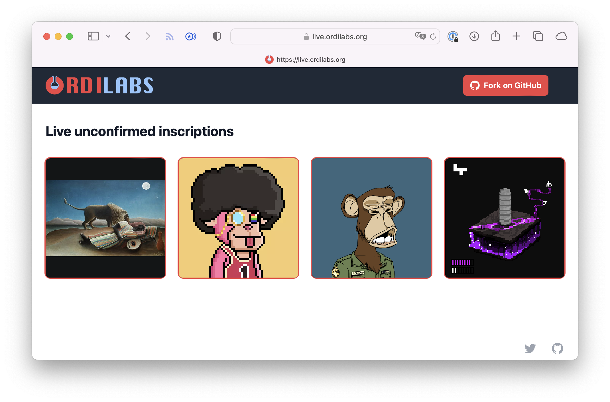

Tools for ordinals
Open source developer tools for building a bitcoin economy on
Ordinals.
Open source. Built in Rust.

Open source developer tools for building a bitcoin economy on
Ordinals.
Open source. Built in Rust.